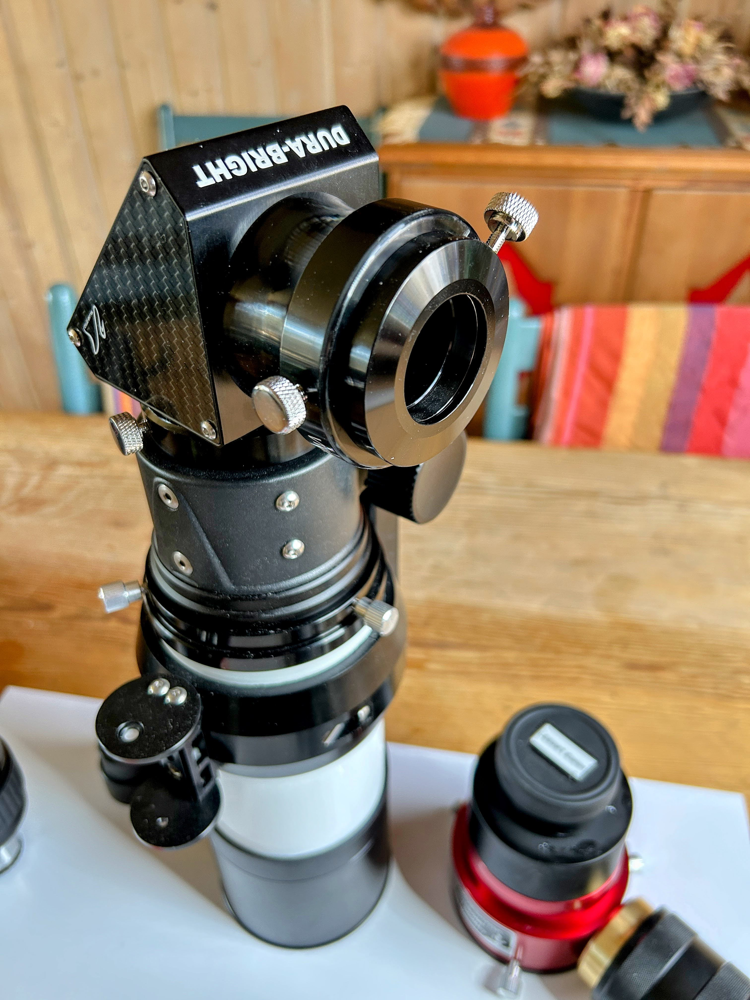

The LS60MT configured for use as a regular nighttime telescope. In this configuration, it must never be pointed at the Sun. Be sure to read the description below the image.
LS60MT Ready For Night Observing / Imaging
No solar filters are mounted. The telescope must not be used for any solar work.
The William Optics Diagonal is mounted with its included 2-inch to 1.25-inch reducer, allowing use of the Pentax Zoom. The same reducer is also used for mounting the Lunt Herschel Diagonal in the white light configuration.